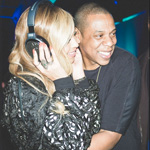

| Home | Destiny's Child | Sasha Fierce | Mrs. Carter |
|
|||
|
Mrs.Carter
|
Jay Z 1997–2000: While they weren’t the subject of relationship rumors until the October 2002 release of the Jay Z single “’03 Bonnie and Clyde,” the two had become acquainted through the music scene well before that. Exactly when their meet-cute happened remains vague, although various accounts puts it somewhere between 1997 and 2000. In a 2007 interview with Charlie Rose, Jay said he met Bey “ten years ago” (so, 1997). But in a 2008 interview with Seventeen, Bey said, “I was 18 when we first met, 19 when we first started dating.” (She was born September 4, 1981, so this would put their first encounter in late 1999 or early 2000.) July 4, 2000: An 18-year-old Bey appears on Jay Z protégé (and Roc-A-Fella records golden girl) Amil’s track “I Got That.” November 2001: Jay and Bey both appear on the cover of Vanity Fair’s music issue. In an interview with Vanity Fair more than a decade later, Jay would say of the time surrounding that shoot, “We were just beginning to try to date each other.” October 10, 2002: Bey’s first post–Destiny’s Child solo project is “’03 Bonnie and Clyde,” with Bey playing the modern-day Bonnie to Jay’s Clyde in the music video.While the video fuels intense rumors about their relationship, the pair remain hush-hush about it, with Jay saying in a 2003 interview with Playboy that the pair are “just friends.” But in one of their earliest TV appearances together, on MTV’s TRL back in 2002, Bey is sporting Jay’s signature Yankees cap. 2003: While the couple refuses to acknowledge their relationship publicly, paparazzi shots tell another story. Throughout 2003, the pair are frequently spotted at events. June 2003: Beyoncé releases her first solo album, Dangerously in Love, along with her first solo single, "Crazy in Love," featuring Jay-Z.Dangerously in Love also features another duet, the song “That’s How You Like It,” on which Jay raps: “Young Hovah and the Letter B. How you like that, huh?” Even when they aren’t duetting, the pair is referring to one another in their lyrics, with Bey’s "Signs" referencing her love for a Sagittarius (Jay’s sign!) and Jay’s “Public Service Announcement” (from that year’s Black Album) has him spitting “I got the hottest chick in the game wearing my chain.” August 28, 2003: Jay and Bey perform "Crazy in Love" together at the MTV Video Music Awards, and will continue to perform that song together at other venues throughout the year. 2004: The couple appears on a red carpet together for the first time, at the 2004 MTV Video Music Awards, in (arguably regrettable) matching outfits. 2005: Despite attempts to keep their relationship private, the pair remains highly visible throughout 2005, as they are snapped canoodling everywhere from Italy to the Grammys. January 10, 2006: In a Cosmopolitan magazine interview, Beyoncé teases a wedding for the first time — well, sort of. She mentions it, at least. “Right now, the tabloids are saying I’m pregnant, and they’re naming the baby,” she said. “It’s hilarious. I don’t know when I’ll want to get married. I never pictured myself as a bride, but after my sister’s wedding, I did start thinking about what kind of wedding I’d want. I don’t think I want a big one.” September 2006: Beyoncé releases her album B’Day, featuring Jay Z on the songs "Upgrade U" and "Déjà Vu." In his 2010 book Decoded, Jay clarifies that the song is indeed about their relationship: These lines are about trying to have a real, serious relationship with another ambitious professional. In a lot of ways, this is the flip side of the songs in my catalog like “Big Pimpin’,” where women exist almost completely as predators or objects. This is about how difficult it is to respect a lover as an autonomous human being, with separate needs and goals and timelines than yours. It’s one of the hardest things about a real relationship of equals. But it’s worth it. In 2006, Jay also released the single “Hollywood,” featuring Bey, which she then rereleased on the deluxe version of B’Day as “Welcome to Hollywood.” 2007: The pendulum swings yet again from breakup rumors to engagement rumors: While the pair won’t publicly confirm it, rumors of their engagement run rampant throughout 2007, with tabloids claiming that Jay popped the question on Bey’s birthday in September. April 4, 2008: Jay and Bey marry at a private ceremony at Jay Z’s Tribeca apartment New York. Their marriage is on 4/4, a persistently important number in their relationship (they were both born on the fourth of the month). Instead of exchanging rings, they both got matching IV tattoos on their ring fingers. October 2008: In an interview with Essence magazine, Bey is unusually candid about her private life, explaining that it was a joint decision to keep quiet about their relationship. (As she put it: "We decide everything. My word is my word. What Jay and I have is real. It’s not about interviews or getting the right photo op. It’s real.”) She also says that their wedding was small, intimate, and drama-free, adding that she didn’t want an engagement ring because “people put too much emphasis on that. It’s just material, and it’s just silly to me.” At the same time, the writer’s description of the interview process offers a neat summation of what it’s like to try and get the Queen B to open up about her relationship: Interviewing Beyoncé, who has admitted she dislikes the process, is a little like talking to your mother about sex. There may be a pretense of open communication, but the subtext is clear: Are you seriously going to ask me that? … For now, Beyoncé and Jay-Z’s relationship exists in that no-man’s land where they won’t give us anything and we can’t get enough. January 20, 2009: Bey and Jay show solidarity with another U.S. power couple — Barack and Michelle Obama — by attending the inauguration together. The two were staunch Obama supporters throughout his presidential campaign.
July 21, 2014: Beyoncé’s Instagram continues to tell their story, projecting the image of she and Jay Z as a happily married couple.
|